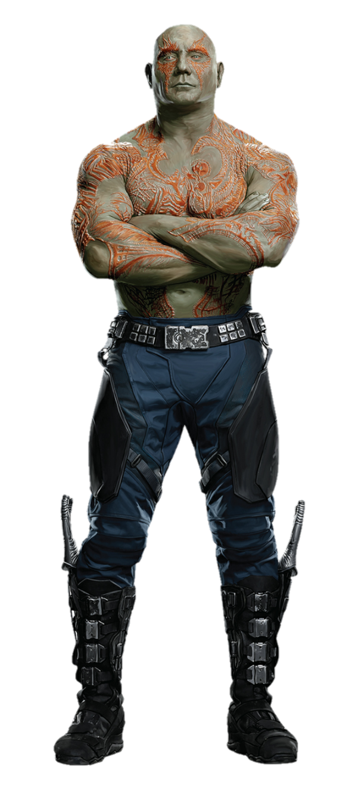
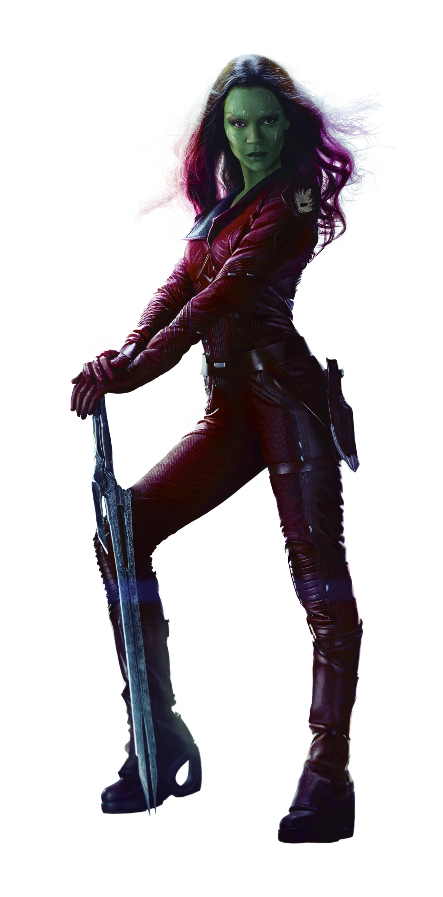
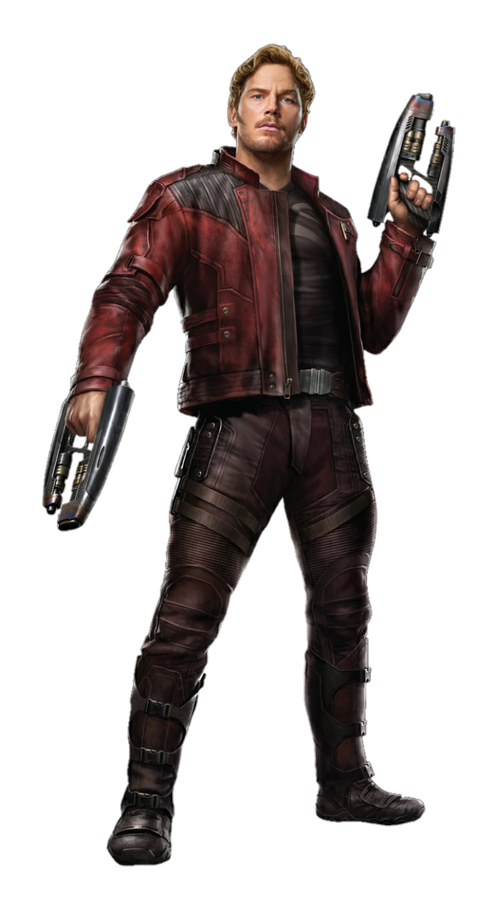

Groot

Cuando Groot tiene un tamaño grande es estupendo pero cuando se queda como Baby Groot, en pequeñito, es directamente adorable y todos queremos uno en nuestras casas. Es un alienígena con forma de árbol pero encierra mucho más.
Rocket

Este mapache con cerebro muy desarrollado y algo aficionado a los robos y los problemas es uno de los más entrañables del grupo. Su nombre completo original es Rocket Raccoon y proviene de Rocky Raccoon, una gran canción de The Beatles incluida en su White Album. En la película la voz del personaje corre a cargo de Bradley Cooper. Es amigo inseparable de Groot.
Drax
A Drax le suelen llamar "El Destructor", un apodo que le viene como anillo al dedo. Es cierto que va ganando confianza y en la segunda cinta sufre un mayor número de momentos graciosos aunque también empuña sus armas (los cuchillos afilados le acompañan) y fuerza bruta en algunas situaciones. El actor es Dave Bautista, un tipo al que la suerte la vino de cara. El papel había sido pensado para Jason Momoa pero al final se lo quedó Bautista por cosas del destino.
Gamora
De piel verde y alto poder de curación, aparte de ser una experta luchadora, es la última de su especie, hija del casi invencible Thanos y hermanastra de Nébula. La actriz Zoe Saldaña da vida a la perfección a Gamora con ese carisma, poder y agilidad que el personaje requería. En los cómics se apreciaban tramas románticas de Gamora con Nova o incluso Adam Warlock, aunque las películas juegan más a aventurar una imposible historia de amor y desamor con Quill.
Star-Lord
Hijo de una humana (Meredith, fallecida a causa de un cáncer) y un padre muy poderoso que no se va a citar aquí pero con cualidades y poderes galácticos sorprendentes, a Quill le da vida un socarrón y galán aventurero Chris Pratt.